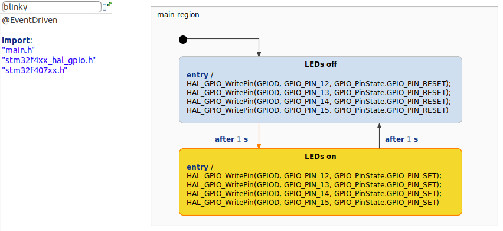

[Pro] STM32F407 Discovery Board With Deep C Integration
This is an example for the integration of YAKINDU Statechart Tools with another IDE, here the STM32CubeIDE. The example model makes use of the deep C integration to directly call functions from the HAL headers in the statechart model:

This simple state machine consists of two states in which the LEDs are controlled. The initialization has been done with the integrated CubeMX tool.
Getting started
As already mentioned, the configuration of the STM32F407VG has been realized with the CubeMX tool. The configuration can be adapted in the '.ioc' file. For this, a full installation of the STM32CubeIDE is required. You can find it HERE.
After downloading and installing the STM32CubeIDE, YAKINDU Statechart Tools Professional Edition must installed via the update site. You can follow these STEPS.
Configuration
In this example the configuration is quite simple. Four pins, which are connected to the four mounted LEDs, are configured as ouputs. The clock is set to it's maximum of 168 MHz and the timer TIM5 works in interrupt mode, creating an interrupt every 1 ms, which is later on used for the timer.

/* USER CODE BEGIN 2 */
HAL_TIM_Base_Start_IT(&htim5);
sc_timer_service_init(&timer_service, timers, MAX_TIMERS, (sc_raise_time_event_fp)
&blinky_raiseTimeEvent);
blinky_init(&sm);
blinky_enter(&sm);
/* USER CODE END 2 */
Additionally, the callback for the interrupt must be implemented, which is used to trigger the timer periodically:
/* USER CODE BEGIN 4 */
void HAL_TIM_PeriodElapsedCallback(TIM_HandleTypeDef* htim) {
if(htim->Instance == htim5.Instance) {
sc_timer_service_proceed(&timer_service, TICK_MS);
}
}
void blinky_setTimer(Blinky* handle, const sc_eventid evid, const sc_integer time_ms, const sc_boolean
periodic){
sc_timer_start(&timer_service, (void*) handle, evid, time_ms, periodic);
}
void blinky_unsetTimer(Blinky* handle, const sc_eventid evid){
sc_timer_cancel(&timer_service, evid);
(void) handle;
}
/* USER CODE END 4 */